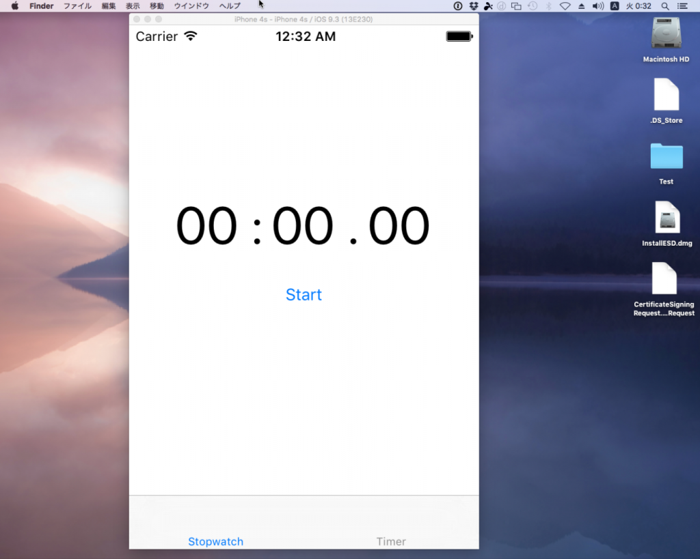

前回はTimerを使ってみました。
Problem
アプリを作る上で設定画面などを用意する上でタブは欠かせないです。UWPならPivotですね。 XamarinではXamarin.Forms.TabbedPageが該当しますが、WPFのTabControlやUWPのPivotと異なり、それ自体がPageの要素になります。 つまりTabControlやPivotと異なり、他の要素の子として追加できないようです。
MultiPage`1 that displays an array of tabs across the top of the screen, each of which loads content onto the screen.
訳:スクリーンのトップを横断するタブの配列を表示するMultiPage`1で、スクリーンに各ページがコンテンツをロードします。
とあります。 TabbedPageはMultiPageの派生で、子要素は説明にあるとおり、Pageの派生クラスのみ追加できるようです。ですので、ContentPageやTabbedPageを追加できます。 注意事項として、
The user interface of a tabbed page consists of a list of tabs and a larger detail area. On iOS, the list of tabs appears at the bottom of the screen, and the detail area is above. On Android and Windows phones, the tabs appear across the top of the screen. The user can scroll the collection of tabs that are across the top of the screen if that collection is too large to fit on one screen.
訳:Tabbedページのユーザーインターフェイスはタブリストとより大きな詳細エリアから構成されます。iOSにおいては、スクリーンの下部にタブのリストが表示され、その上部に詳細エリアが表示されます。AndroidとWindows Phoneでは、タブはスクリーン上部に位置します。ユーザは、タブのコレクションがスクリーンにフィットするより大きい場合は、スクリーン上部に位置するタブのコレクションをスクロールできます。
つまり、タブの位置は変更できないようです。 とりあえずつかってみないことにはわかりません。 前回のストップウォッチにタブを加えてみます。 ソースは https://github.com/takuya-takeuchi/Demo/tree/master/Xamarin.Forms.Portable3です。
Resolution
特に難しいこともないのですが、Macでデバッグする際、Dockが邪魔をしてタブのテキストが見えなくなって、どうしてテキストが表示されないのか10分くらい悩みました。 画面の関係上、iPhone Simulatorが画面を大きく占める場合は、Dockを自動で隠す設定にした方が無難かもしれません。 まずはエントリポイントとなるメインのビューであるMainPageView。 MainPageView.xaml [code lang=”xhtml”]
<TabbedPage.Children> <pages:StopwatchPageView Title=”Stopwatch” />
using Xamarin.Forms;
namespace Xamarin.Forms.Portable3.Views { public partial class MainPageView : TabbedPage { public MainPageView() { InitializeComponent(); } } } [/code] 注意するのは、ContentPageではなく、TabbedPageの派生クラスに変化したことです。 それ以外は、TabbedPageの子要素として、Pageの派生クラスを追加するだけです。 StopwatchPageViewは前回MainPage.xamlにあった内容を移動しただけです。タブの内容を別のビューとして切り出しただけです。 また、Childrenの三つめにTabbedPgaeを加えてタブを入れ子にしています。 実行すると下記のようになります。 
{kind=link}
タブがページ下部に….
{kind=link}
入れ子にもできます
このあたりも簡単ですね。 本当はViewModelsからDataTemplateSeclectorを使ってViewを切り替えたかったのですが、まだ未調査でした。 次回できたらいいなと思います。(´ω｀)ﾎｯｺﾘ
Conclusion
タブがあるかどうかでアプリがぐっと実用的になると思います。 特に設定画面などはタブのページで用意するのはテンプレと言ってもいいですし。 個人的には、タブは上にあった方が良いんですが、これはカスタマイズできるんでしょうか？
Source Code
https://github.com/takuya-takeuchi/Demo/tree/master/Xamarin.Forms.Portable3